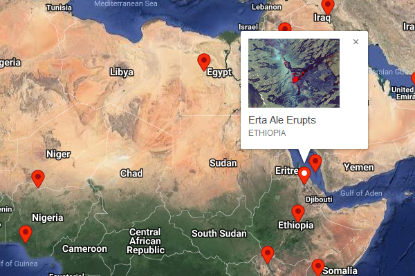

×

These images come from a volcano in Ethiopia called 'Erta Ale', which means 'smoking mountain'.
A lake of lava oozed out of the side on Jan. 10. On Feb 11 it released its trapped volcanic gases.
Other hot areas were seen by the satellite on the southeastern slope of the volcano, as shown in the 'after' image.
The satellite’s shortwave infrared (SWIR) signal shows high temperatures where new lava is either very shallow, or gurgling up to the surface.
By detecting hotspots, ground movement, and eruptions of hot gas, satellites can constantly monitor and predict volcano behaviour from a safe distance.
Images: NASA